Faculty
A world-class team.
More than two dozen faculty members from top institutions collaborating to harness the power of the human brain.
Jump to
University of California, Berkeley
16 faculty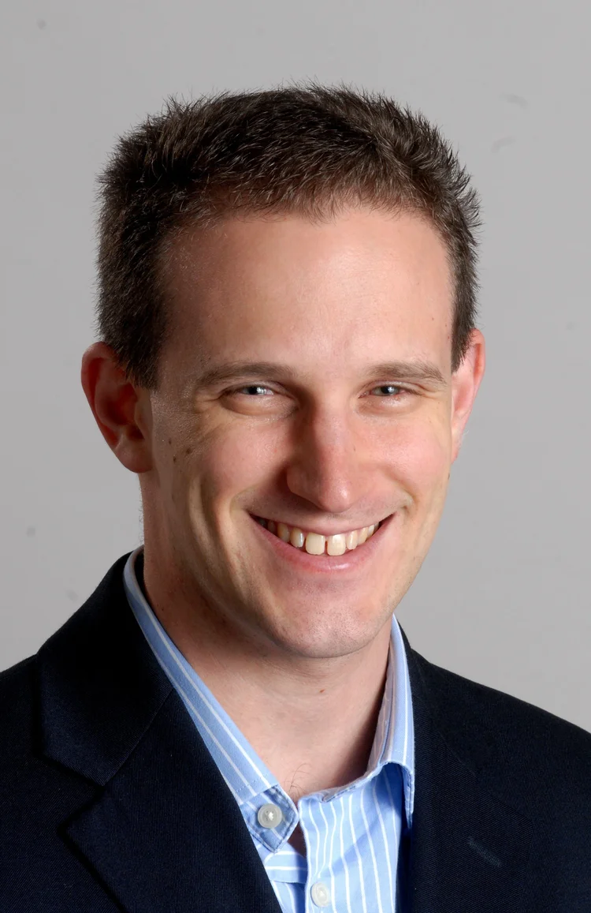
Elad Alon
Profile 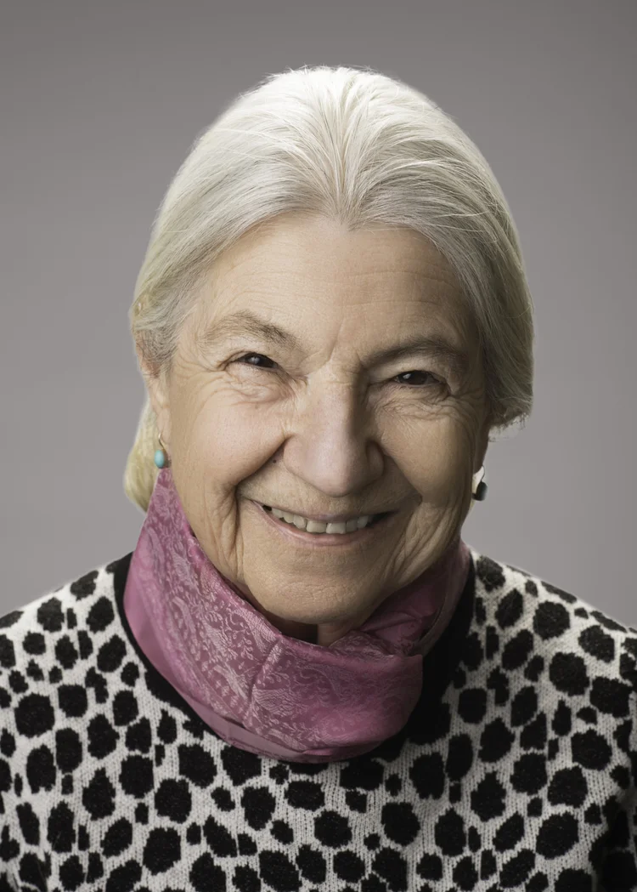
Ruzena Bajcsy
Profile 
Jack Gallant
Profile 
Liberty Hamilton
Profile 
Alex Huth
Profile 
Richard Ivry
Profile Preeya Khanna
Profile 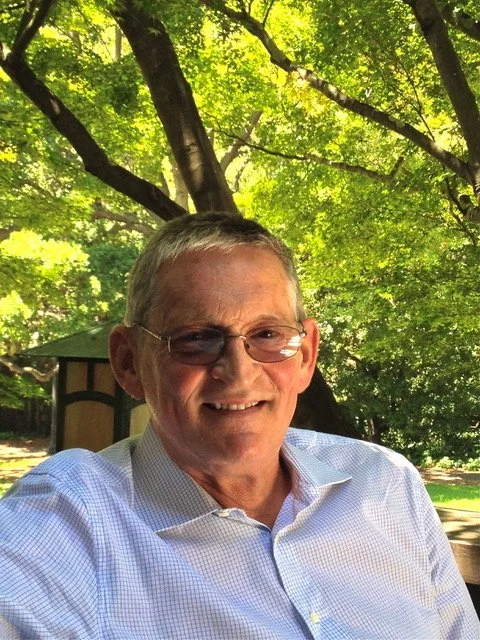
Robert Knight
Profile 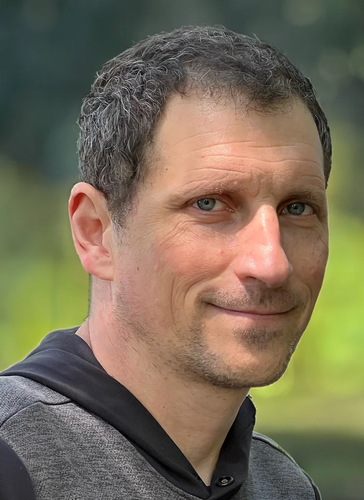
Michael Lustig
Profile Rikky Muller
Profile 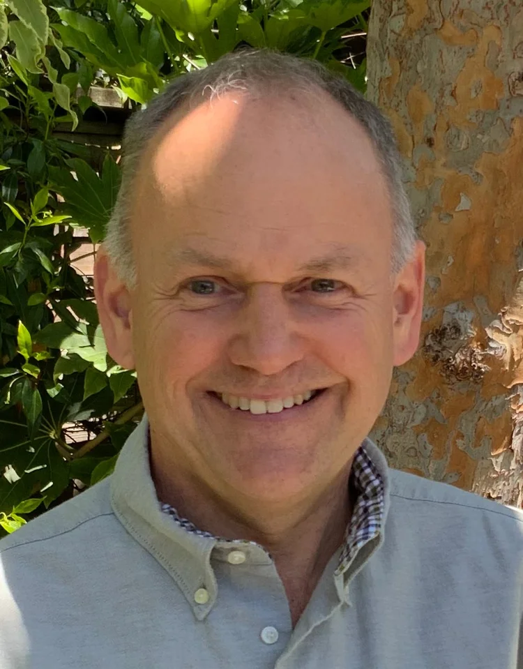
Bruno Olshausen
Profile 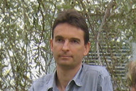
Friedrich Sommer
Profile Frederic Theunissen
Claire Tomlin
Profile Joni Wallis
Profile 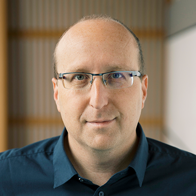
Michael Yartsev
Profile University of California, San Francisco
16 faculty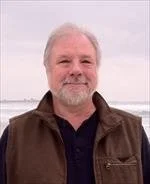
Michael Beattie
Profile 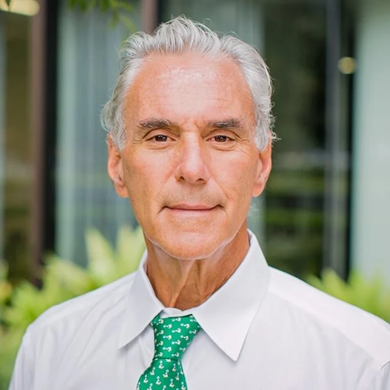
Mitchel Berger
Profile 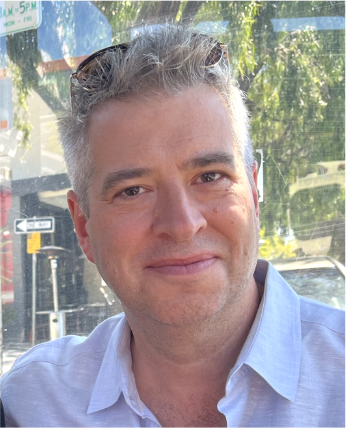
Joshua Berke
Profile Edward Chang
Profile Winston Chiong
Profile 
Loren Frank
Profile 
Karunesh Ganguly
Profile 
Adam Gazzaley
Profile 
Andrew Krystal
Profile Andrew Lee
Profile Geoffrey Manley
Profile 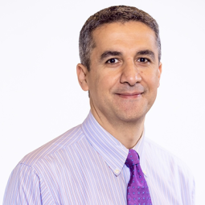
Khaled Moussawi
Profile Richard O'Donnell
Profile Christoph Schreiner
Profile Prasad Shirvalkar
Profile Philip Starr
Profile